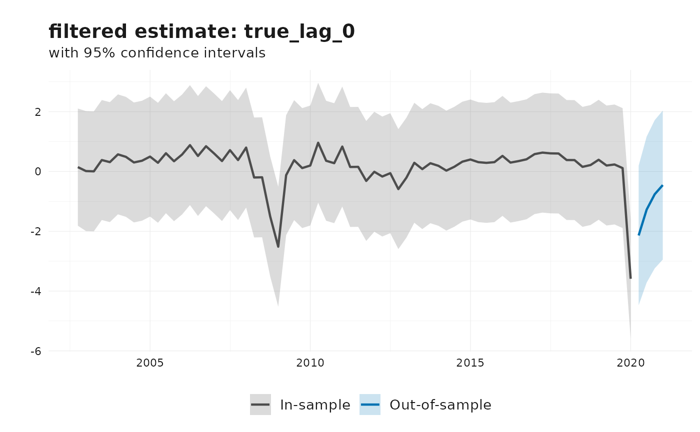
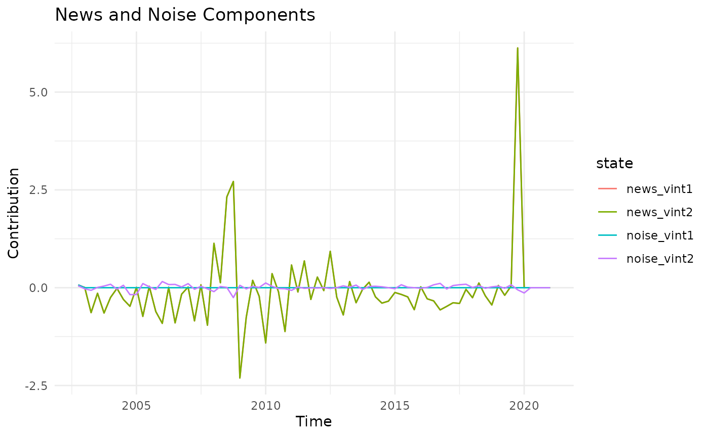

Nowcasting revisions using the Jacobs-Van Norden model
Source:vignettes/nowcasting-revisions-jvn.Rmd
nowcasting-revisions-jvn.RmdHaving established that revisions are predictable, we can now apply nowcasting techniques to estimate the current state of the economy. This vignette demonstrates how to implement a nowcasting model using the Jacobs-Van Norden (JVN) framework (Jacobs and Van Norden (2011)).
The Jacobs-van Norden Model
The JVN model provides a flexible state-space framework for decomposing data revisions into economically meaningful components: news and noise. Unlike traditional approaches that treat all revisions as either pure information updates or pure measurement error, the JVN model allows for a mixture of both, providing a more realistic representation of the revision process.
Key Features
- News component (): Represents genuine new information about the true state of the economy that was not available at the time of the initial release
- Noise component (): Represents measurement error or temporary distortions in preliminary estimates that are corrected in subsequent revisions
- Spillover effects: Allow revisions to one vintage to affect revisions to other vintages, capturing the complex dynamics of the revision process
- Flexible dynamics: Accommodates autoregressive behavior in the true underlying series
Model Structure
The JVN model is represented in state-space form (notation following Durbin and Koopman (2012)) with two key equations:
1. The Observation Equation
The observation equation links the observed data vintages to the latent state variables:
where contains the different vintages of data available at time , and is the state vector containing the true value, news, and noise components.
2. The State Equation
The state equation describes the dynamics of the latent states:
where represents the structural shocks.
Example: AR(2) Model with Three Releases
Consider an AR(2) process for the true output growth with three data releases. The complete model can be written as:
The state vector evolves according to:
$$ \begin{bmatrix} \tilde{y}_{t} \\ \tilde{y}_{t-1} \\ \nu_{1t} \\ \nu_{2t} \\ \nu_{3t} \\ \zeta_{1t} \\ \zeta_{2t} \\ \zeta_{3t} \end{bmatrix} = \begin{bmatrix} \rho_1 & \rho_2 & 0 & 0 & 0 & 0 & 0 & 0 \\ 1 & 0 & 0 & 0 & 0 & 0 & 0 & 0 \\ 0 & 0 & \tau_{\nu 1} & 0 & 0 & 0 & 0 & 0 \\ 0 & 0 & 0 & \tau_{\nu 2} & 0 & 0 & 0 & 0 \\ 0 & 0 & 0 & 0 & \tau_{\nu 3} & 0 & 0 & 0 \\ 0 & 0 & 0 & 0 & 0 & \tau_{\zeta 1} & 0 & 0 \\ 0 & 0 & 0 & 0 & 0 & 0 & \tau_{\zeta 2} & 0 \\ 0 & 0 & 0 & 0 & 0 & 0 & 0 & \tau_{\zeta 3} \end{bmatrix} \begin{bmatrix} \tilde{y}_{t-1} \\ \tilde{y}_{t-2} \\ \nu_{1,t-1} \\ \nu_{2,t-1} \\ \nu_{3,t-1} \\ \zeta_{1,t-1} \\ \zeta_{2,t-1} \\ \zeta_{3,t-1} \end{bmatrix} + \\ \begin{bmatrix} \sigma _{e} & \sigma _{\nu 1} & \sigma _{\nu 2} & \sigma _{\nu 3} & 0 & 0 & 0 \\ 0 & 0 & 0 & 0 & 0 & 0 & 0 \\ 0 & -\sigma _{\nu 1} & -\sigma _{\nu 2} & -\sigma _{\nu 3} & 0 & 0 & 0 \\ 0 & 0 & -\sigma _{\nu 2} & -\sigma _{\nu 3} & 0 & 0 & 0 \\ 0 & 0 & 0 & -\sigma _{\nu 3} & 0 & 0 & 0 \\ 0 & 0 & 0 & 0 & 0 & \sigma _{\zeta 1} & 0 & 0 \\ 0 & 0 & 0 & 0 & 0 & 0 & \sigma _{\zeta 2} & 0 \\ 0 & 0 & 0 & 0 & 0 & 0 & 0 & \sigma _{\zeta 3} \\ \end{bmatrix} \cdot \begin{bmatrix} \eta _{et} \\ \eta _{\nu _{1}t} \\ \eta _{\nu _{2}t} \\ \eta _{\nu _{3}t} \\ \eta _{\zeta _{1}t} \\ \eta _{\zeta _{2}t} \\ \eta _{\zeta _{3}t} \\ \end{bmatrix} $$
The error loading matrix and shock vector capture how structural innovations affect each component. The true value is affected by all news shocks (cumulative information), while individual news and noise components receive their own independent shocks.
Nowcasting with the JVN Model
We demonstrate nowcasting Euro Area GDP using the JVN model. The procedure follows these steps:
- Identify the efficient release (the first release that is not systematically revised)
- Estimate the JVN model using Maximum Likelihood
- Examine model fit and parameters
Identify Efficient Release
library(reviser)
library(dplyr)
library(lubridate)
library(ggplot2)
# Prepare GDP data
gdp <- reviser::gdp %>%
tsbox::ts_pc() %>%
dplyr::filter(
id == "EA",
time >= min(pub_date),
time <= as.Date("2020-01-01")
) %>%
tidyr::drop_na()
# Get first 15 releases
df <- get_nth_release(gdp, n = 0:14)
# Get final release (4 years after initial)
final_release <- get_nth_release(gdp, n = 15)
# Test for efficient release
efficient_release <- get_first_efficient_release(
df,
final_release
)
data <- efficient_release$data
e <- efficient_release$e
summary(efficient_release)
#> Efficient release: 2
#>
#> Model summary:
#>
#> Call:
#> stats::lm(formula = formula, data = df_wide)
#>
#> Residuals:
#> Min 1Q Median 3Q Max
#> -0.34873 -0.08185 -0.00706 0.10475 0.31533
#>
#> Coefficients:
#> Estimate Std. Error t value Pr(>|t|)
#> (Intercept) 0.03276 0.01775 1.846 0.0692 .
#> release_2 1.01446 0.02440 41.577 <2e-16 ***
#> ---
#> Signif. codes: 0 '***' 0.001 '**' 0.01 '*' 0.05 '.' 0.1 ' ' 1
#>
#> Residual standard error: 0.1428 on 68 degrees of freedom
#> Multiple R-squared: 0.9622, Adjusted R-squared: 0.9616
#> F-statistic: 1729 on 1 and 68 DF, p-value: < 2.2e-16
#>
#>
#> Test summary:
#>
#> Linear hypothesis test:
#> (Intercept) = 0
#> release_2 = 1
#>
#> Model 1: restricted model
#> Model 2: final ~ release_2
#>
#> Note: Coefficient covariance matrix supplied.
#>
#> Res.Df Df F Pr(>F)
#> 1 70
#> 2 68 2 2.743 0.07151 .
#> ---
#> Signif. codes: 0 '***' 0.001 '**' 0.01 '*' 0.05 '.' 0.1 ' ' 1The efficient release test identifies that , meaning the 3th release is an efficient estimate of the final value.
Estimate the JVN Model
The jvn_nowcast() function estimates the model using
Maximum Likelihood Estimation (MLE). You can specify:
- AR order: The order of the autoregressive process for the true value
- Model components: Whether to include news, noise, and/or spillovers
- Optimization method: L-BFGS-B (default), two-step, nlminb, and more
- Standard error calculation: Hessian-based (default)
# Estimate JVN model with news and noise
nowcast <- jvn_nowcast(
df = data,
e = e,
ar_order = 1,
h = 4, # 4-period ahead forecast
include_news = TRUE,
include_noise = TRUE,
include_spillovers = FALSE,
method = "L-BFGS-B"
)Examine Model Fit and Parameter
# Model diagnostics
summary(nowcast)
#>
#> === Jacobs-Van Norden Model ===
#>
#> Convergence: Success
#> Log-likelihood: 20.72
#> AIC: -29.44
#> BIC: -11.79
#>
#> Parameter Estimates:
#> Parameter Estimate Std.Error
#> rho_1 0.596 0.139
#> sigma_e 0.001 0.426
#> sigma_nu_1 1.023 0.257
#> sigma_nu_2 0.001 0.023
#> sigma_zeta_1 0.001 0.045
#> sigma_zeta_2 0.070 0.006Extract State Estimates
The model provides both filtered and smoothed estimates:
- Filtered estimates: Use only information available up to time
- Smoothed estimates: Use the full sample (better for historical analysis)
# Extract filtered states
filtered_states <- nowcast$states %>%
filter(filter == "filtered", state == "true_lag_0")
# View recent estimates
tail(filtered_states, 8)
#> # A tibble: 8 × 7
#> time state estimate lower upper filter sample
#> <date> <chr> <dbl> <dbl> <dbl> <chr> <chr>
#> 1 2019-04-01 true_lag_0 0.200 -1.81 2.21 filtered in_sample
#> 2 2019-07-01 true_lag_0 0.235 -1.77 2.24 filtered in_sample
#> 3 2019-10-01 true_lag_0 0.114 -1.89 2.12 filtered in_sample
#> 4 2020-01-01 true_lag_0 -3.59 -5.59 -1.58 filtered in_sample
#> 5 2020-04-01 true_lag_0 -2.14 -4.47 0.196 filtered out_of_sample
#> 6 2020-07-01 true_lag_0 -1.28 -3.72 1.17 filtered out_of_sample
#> 7 2020-10-01 true_lag_0 -0.761 -3.24 1.72 filtered out_of_sample
#> 8 2021-01-01 true_lag_0 -0.454 -2.95 2.04 filtered out_of_sampleVisualize Results
plot(nowcast)
# Compare news and noise components
nowcast$states %>%
filter(filter == "smoothed", grepl("news|noise", state)) %>%
ggplot(aes(x = time, y = estimate, color = state)) +
geom_line() +
labs(
title = "News and Noise Components",
x = "Time",
y = "Contribution"
) +
theme_minimal()
Advanced Features
Multi-Start Optimization
For complex models, it’s recommended to use multi-start optimization to avoid local optima:
nowcast_robust <- jvn_nowcast(
df = data,
e = e,
ar_order = 2,
include_news = TRUE,
include_noise = TRUE,
include_spillovers = TRUE,
solver_options = list(
n_starts = 5, # Try 5 different starting points
trace = 1, # Show progress
maxiter = 2000 # Increase max iterations
)
)Model Comparison
Compare different specifications to find the best fit:
# News-only model
model_news <- jvn_nowcast(data, e, include_news = TRUE, include_noise = FALSE)
# Noise-only model
model_noise <- jvn_nowcast(data, e, include_news = FALSE, include_noise = TRUE)
# Full model with spillovers
model_full <- jvn_nowcast(
data, e,
include_news = TRUE,
include_noise = TRUE,
include_spillovers = TRUE
)
# Compare BIC (lower is better)
data.frame(
Model = c("News Only", "Noise Only", "Full with Spillovers"),
BIC = c(model_news$bic, model_noise$bic, model_full$bic),
AIC = c(model_news$aic, model_noise$aic, model_full$aic)
)Custom Starting Values
For difficult optimization problems, you can provide custom starting values:
# Get the number of parameters
n_params <- nowcast$jvn_model_mat$param_info$n_params
# Provide custom starting values
custom_starts <- rep(0.1, n_params)
nowcast_custom <- jvn_nowcast(
df = data,
e = e,
solver_options = list(
startvals = custom_starts,
transform_se = TRUE
)
)Interpretation
News vs Noise
The key insight from the JVN model is the decomposition of revisions:
- Large news variances (): Initial releases understate the true value; revisions contain important information
- Large noise variances (): Initial releases are noisy; revisions mainly remove measurement error
- AR dynamics (): Persistence in the true underlying series
Forecasting Implications
- If revisions are mainly news: Initial releases should be given less weight; wait for revisions
- If revisions are mainly noise: Initial releases already contain most information; revisions are less informative
- Spillovers indicate that information in one revision affects expectations about other revisions